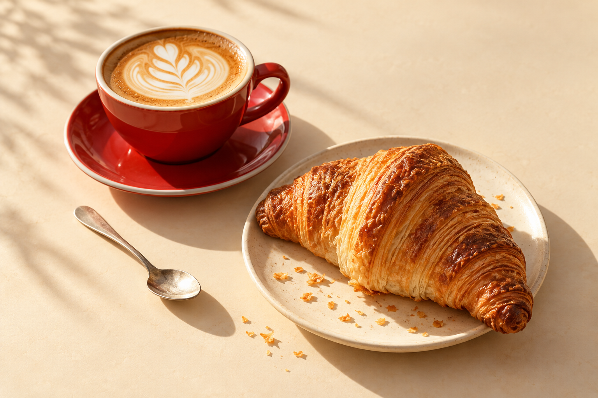

UN CAFÉ ES UN BUEN COMIENZO.
VENÍ POR
UN CAFÉ.
QUEDATE POR
TODO LO DEMÁS.
El primer sorbo. La última miga.
Y esas ganas de quedarse un rato más.

HACETE
un ratito.
UN CAFÉ ES UN BUEN COMIENZO.
El primer sorbo. La última miga.
Y esas ganas de quedarse un rato más.

HACETE
un ratito.